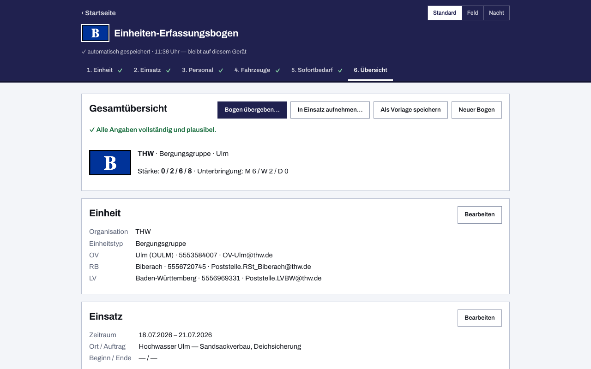

Einheiten-Erfassungsbogen für das THW
Rückt ein Ortsverband zum Einsatz aus, will die Führungsstelle als Erstes wissen: Wer ist da, mit welcher Stärke, mit welchen Fahrzeugen, was wird gebraucht? Genau das hält der Einheiten-Erfassungsbogen fest. Diese App ist das kostenlose Online-Tool dafür — zugeschnitten auf das THW mit seinen Ortsverbänden, Zügen und Fachgruppen, und gebaut für den Fall, dass am Bereitstellungsraum weder WLAN noch Mobilfunk verfügbar sind.
Vorbelegt statt abgetippt: StAN, Funkrufnamen, Fachgruppen
Der größte Zeitfresser beim Ausfüllen ist das Abtippen dessen, was ohnehin feststeht. Deshalb bringt die App Vorbelegungen für das THW mit — du bestätigst, statt zu tippen:
- Ortsverband auswählen — Standort und Einheitsbezeichnung sind ausgefüllt, das taktische Zeichen erscheint im Kopf des Bogens und später im PDF.
- Fahrzeuge nach StAN — für viele Einheiten sind die Fahrzeuge der Stärke- und Ausstattungsnachweisung bereits eingetragen; du streichst oder ergänzt nur, was heute tatsächlich abweicht.
- Funkrufnamen nach Taschenkarte — der Funkrufname wird aus Teileinheit und Fahrzeug vorgeschlagen, wie es die THW-Systematik vorsieht, statt jedes Mal von Hand zusammengesetzt zu werden.
- Über 100 Beispielbögen — vom Zugtrupp bis zu den Fachgruppen liegen fertige Bögen bei (in der App unter „Beispielbögen"), die du lädst und auf deine eigene Einheit anpasst.
Einen einmal ausgefüllten Bogen speicherst du als eigene Vorlage. Beim nächsten Einsatz oder zur Übung musterst du nur noch: Wer nicht mitfährt, wird gestrichen — der Rest stimmt schon.
Stärkemeldung in gewohnter Form
Die Stärke wird gezählt, wie sie gemeldet wird: Führer, Unterführer, Mannschaft, Gesamt. Namen und Funktionen kannst du erfassen, musst du aber nicht — für die Meldung an den Meldekopf reicht die Stärke. Das fertige PDF folgt dem gewohnten Papier-Layout und lässt sich unverändert in den Papierlauf geben; welche Felder der Bogen enthält, zeigt die Übersicht über Vorlage und Aufbau.
Übergabe ohne Netz: der QR-Code
Auf der letzten Seite des PDF sitzt ein QR-Code, der den kompletten Bogen enthält — nicht bloß einen Link. Der Meldekopf scannt ihn und hat alle Daten im eigenen Gerät, ganz ohne Internet, Server oder Kopplung der Geräte. Wie ein Meldekopf oder Bereitstellungsraum damit ganze Verbände erfasst und Stärken laufend summiert, beschreibt die Seite Meldekopf digital.

Typischer Ablauf im Ortsverband
- Wähle Ortsverband und Einheit — Zeichen, Fahrzeuge und Funkrufnamen stehen.
- Mustere: streiche, wer und was heute nicht ausrückt; prüfe die Stärke.
- Benenne den Einsatz: Stichwort, Auftrag, Meldekopf, Eintreffzeit.
- Drucke das PDF — oder lass den QR-Code direkt vom Bildschirm scannen.
Häufige Fragen aus dem THW
Brauche ich dafür eine Freigabe oder ein Konto?
Nein. Die App läuft im Browser, ohne Anmeldung und ohne Server — alle Daten bleiben auf deinem Gerät (Datenschutzerklärung). Sie ist freie Software unter der EUPL-1.2; der Quellcode liegt offen auf GitHub.
Was ist, wenn meine Einheit von der StAN abweicht?
Die Vorbelegung ist ein Startpunkt, kein Zwang: Du kannst jedes Feld ändern, Fahrzeuge streichen oder ergänzen — und den angepassten Bogen als eigene Vorlage speichern.
Funktioniert das auch im Funkloch?
Ja. Nach dem ersten Aufruf arbeitet die Web-App offline weiter; die Übergabe per QR-Code braucht ohnehin keine Verbindung. Für Windows, macOS, Linux und Android gibt es zusätzlich installierbare Apps.